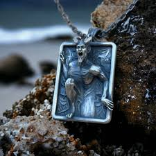

The cursed ballet slippers, purchased at the Out with the Old antique store, had the ability to compel people to wear them, even adjusting their size to accommodate anyone. Once a person puts them on, they are forced to dance until the die. The first victim of the slippers was a ballet dancer by the name of Irina Koganzon who, upon putting the slippers on, danced until her feet literally came off. After being taken into evidence, the young daughter of a police officer, Tracy, spotted the slippers and was compelled to put them on and dance, and she could have died if not for Sam and Dean being at the police station and removing them from the young girl's feet. Upon confiscating the slippers, the slippers make their way into the backseat of the Impala, where Dean admits he is having the urge to "Prince Siegfried himself into oblivion." After retrieving the curse box made for the slippers, Sam puts them back in the box after noticing Dean getting the urge to put them on, which wore off when they were contained.
2. Tea Kettle
The cursed tea kettle appeared to compel any person to immediately drink the boiling contents of it, once its whistle blew. An unknown woman would purchase the cursed tea kettle from the Out with the Old antique store. While chopping vegetables, she picks up an apple from a fruit basket and then drops it with a start when an old-fashioned kettle on the stove top whistles. She walks slowly to the kettle, picks up the metal handle with a bare hand, supports the base of the kettle with her other hand and pours boiling water into her mouth. The water spills over her chin, burning her face. Sam and Dean get the names of customers that have purchased items from the shop and pay a visit to the woman's home, where they enter and see the kettle on the ground next to the woman’s body. Her face is badly burned. Dean picks up some rubber gloves and wraps the handle of the kettle with them before picking it up, while Sam calls the death in.
3. Gramophone
The cursed gramophone had the ability to compel anyone who listened to it to commit murder. A woman by the name of Brenda Gluck purchased it from Out with the Old. Upon bringing it home, Brenda plays an old ragtime record on it while her son plays on a tablet in the living room. When she leaves to go up stairs, her son, Timmy, begins hearing a voice drawing him to the gramophone, saying it has a secret for him. After being entranced by the gramophone, Timmy soon picks up a large knife as his mother walks down the stairs and sits down on the sofa with a magazine. Timmy walks towards her, carrying the knife. As he is raising his arm to strike, Sam bursts in, grabs Timmy’s arm and takes the knife. As Brenda screams, Sam asks where the gramophone is, and is directed to it confiscates it.
4. Pendant

A witch was using these emerald pendants to steal the life force of her victims. When Jules killed her, the pendant was still transferring Lora's life force into the witch's pendant. However, it couldn't heal her because the witch-killing bullet was still inside her, resulting in the pendant working harder to steal Lora's life force. Jack takes the pendant and smashes it with a hammer, releasing her life force and sending it into the other pendant, effectively reviving Lora.